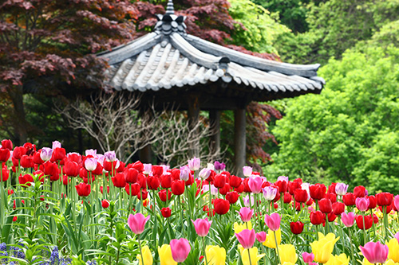
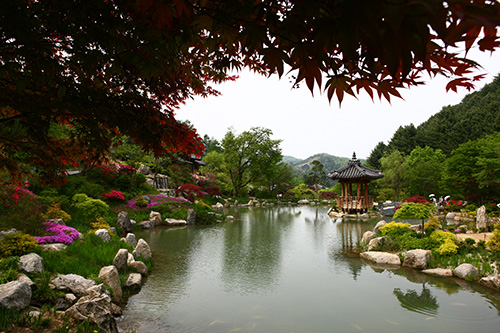
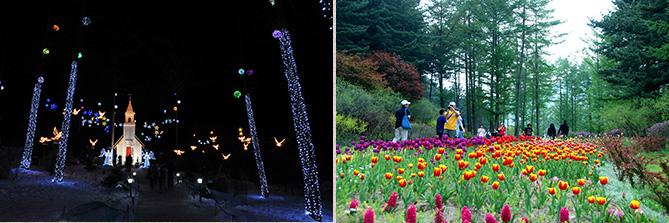
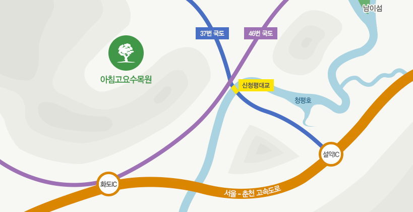

♬ 주변 볼거리, 놀거리 ♬
★ 아침 고요 수목원★



[아침 고요 수목원]
나무와 꽃 천지인 한국식 정원 입구에서 왼쪽으로 15분 정도 걸으면 오를 수 있는
하경전망대에 가장 먼저 드를 것을 권한다.
전망대에 오르면 수목원의 전경을 한눈에 담을 수 있다. 숲을 먼저보고 나무를 보라는 얘기.
가까이서 보는 꼿과 나무도 어여쁘지만,
그것들이 한데 어우러진 그림같은 풍경을 감상하는
즐거움도 매우 크다.
★ 아침 고요 수목원 가는법
 주소 : 경기도 가평군 상면 수목원로 432
버스 : 터미널 또는 청량리 환승센터 1번에서 출발하여 청평터미널 도착.
지하철 : 경춘선을 이용하여 청평역 도착.
ITX청춘열차 : 용산역 또는 청량리역에서 출발하여 청평역 도착.
택시 : 청평 시내에서 수목원까지 정체없이 약 20분이 소요되면, 요금은 15,000원 안팎입니다.
청평역 또는 청평터미널 도착 후 시내버스 이용하여 수목원까지 오시면 됩니다.
★아침 고요 수목원 사이트 첨부[클릭]★